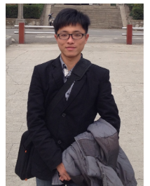

麻昌英博士 · 副教授 · 硕士生导师
2012年本科毕业于长安大学地球物理学专业，2018年博士毕业于中南大学地球探测与信息技术专业。主要从事电磁法、直流电阻率法、激电法正反演理论及应用，工程地球物理勘查研究与应用，深度学习与地球物理勘探交叉应用，以及相关软件开发与应用。
研究关键词
探地雷达波场特征、地下目标识别、无单元局部弱式法、有限元正演、复杂地形、电磁响应、深度学习。
招生与合作
欢迎勘查技术与工程、地球物理学、人工智能、地质类、数学类、物理类、信息类、计算机类等相关专业的学生联系报考。